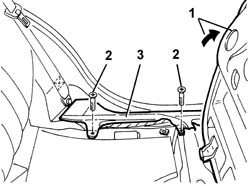

7040L44 rear compartment scuff strip - r r
- Path
- Procedures > 70 FITTINGS > 7040 BODYSHELL INTERIOR TRIMS AND FITTINGS > 7040L cabin floor covering > 7040L44 rear compartment scuff strip - r r
- Kind
- repair procedure (removal / refitting; the operation number is the code)
- Applies to
- all engines; all production periods
- Interactive page
- https://sloeber94.github.io/elrnDB-a147/en/#/3025837
Applies to: all engines; all production periods
 Removing
Removing
 Refitting
Refitting1. Raise the rear seat cushion.
2. Undo the bolts fixing the running board.
3. Remove the running board.

Applies to: all engines; all production periods
Refitting
RemovingCheck that the kick plate is undamaged.
Position the running board and secure it using the bolts.
Lower the rear seat cushion.